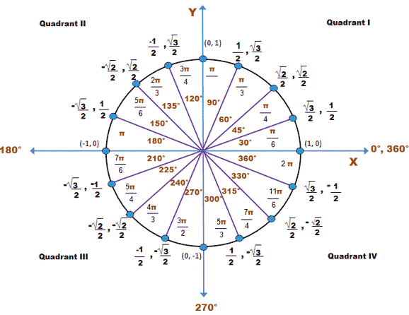
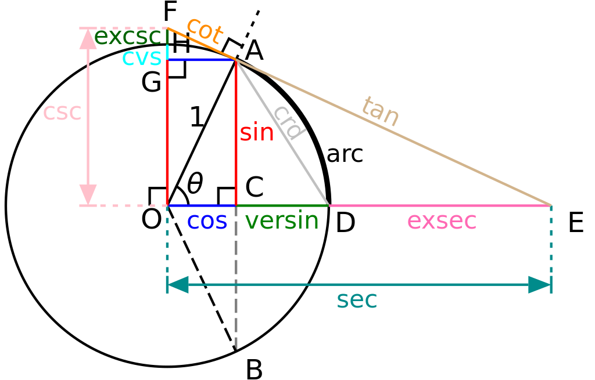

1. Hipotenuza është brinja që gjendet përballë këndit të drejtë (brinja më e madhe) e kemi shënuar me h. 2. Kateti përballë këndit A është në këtë rast brinja a. 3. Kateti i anëshkruar këndit A në rastin tonë është brinja b.
Sinusi është raporti mes katetit përballë këndit dhe hipotenuzës. sin � = � ℎ . {\displaystyle \sin A={\frac {a}{h}}\,.}
Kosinusi Kosinusi është raporti midis katetit te anëshkruar dhe hipotenuzës. cos � = � ℎ . {\displaystyle \cos A={\frac {b}{h}}\,.}
Tangjenti Tangjenti i një këndi është raporti midis këndit perballë me katetin anëshkruar këndit. tan � = � � . {\displaystyle \tan A={\frac {a}{b}}\,.}
Kotangjenti është herësi në mes katetit ku shtrihet këndi dhe katetës përball këndit: cot � = � � . {\displaystyle \cot A={\frac {b}{a}}\,.}
s  